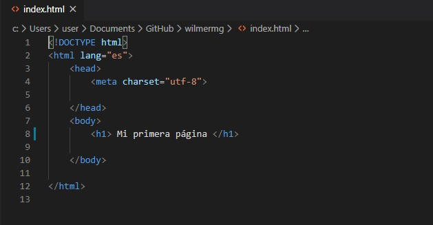

HTML5.
HTML5 es la versión 5 del lenguaje de marcado HTML. Un documento escrito en HTML tiene una estructura básica como la siguiente:
!DOCTYPE html> Lo primero que nos encontramos es la declaración del tipo de documento que se está mostrando. El DOCTYPE variará según el tipo de documento realizado, en nuestro ejemplo hemos utilizado el doctype del HTML5 que es maravillosamente sencillo.
Html Tras declarar el tipo de documento, indicamos que iniciamos nuestro documento HTML. Esta etiqueta se cierra cuando finalizamos el documento. Vemos que lleva un atributo lang, esto sirve para indicar el idioma del documento (en nuestro caso español).
Lo nuevo.
HTML5 ha venido a solucionar, entre otras cosas, la falta de un criterio para definir el contenido semántico de una página web agregando una serie de etiquetas destinadas a facilitar la estructura del documento desde el punto de vista de su significado. Estas son algunas novedades:
Section: Esta etiqueta sirve para agrupar elementos relacionados entre sí de forma temática. Los section creados a nivel del body serán aquellos cuyo contenido de significado a la página, o sea, formen el contenido principal de la misma.
header: Creada para incluir información destinada a ayudar en la navegación. Suele incluir un H1 y, de declararse a nivel de body, la etiqueta nav.
Referencia: rolandocaldas.com. (s.f.). rolandocaldas.com. Obtenido de https://rolandocaldas.com/php/html5-estructura-basica
Este curso en pdf explica el manejo y diseño con la estrctura html5 la cual es la mas reciente hasta el momento para el diseño y creaciones de sitios web.